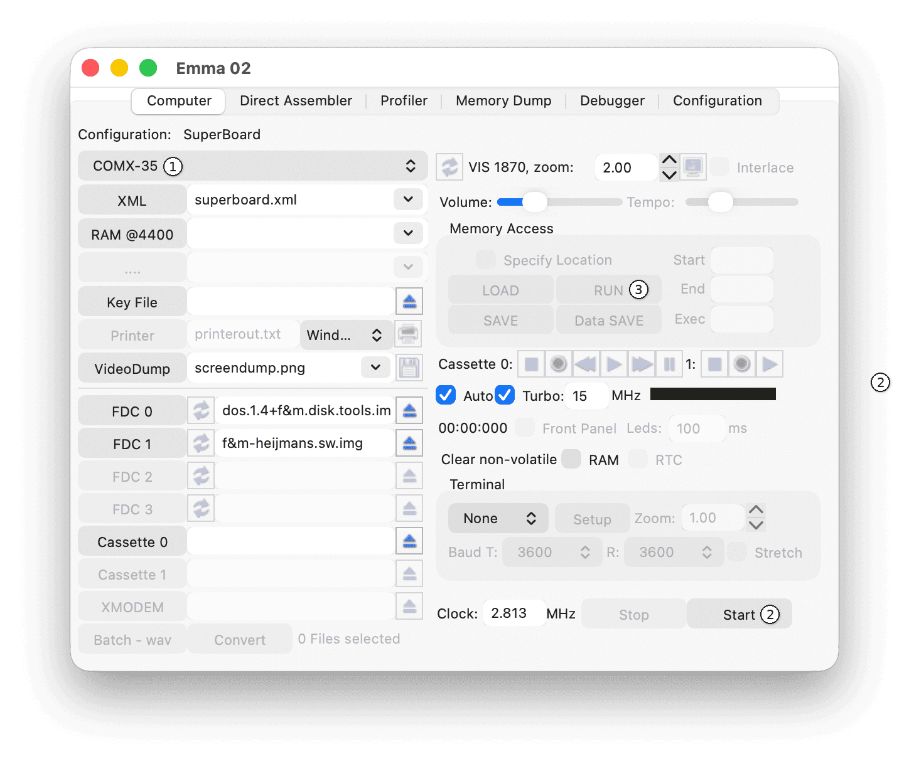

The easiest way to run your favourite game or program on the COMX emulator is to load and run a .comx file using the memory RUN feature (see steps below). At installation, all available software is stored in the Comx directory (located in the application data directory). See the Directory and File Structure section.
The example below shows the controls needed to run a program on the COMX-35.

Select COMX-35 in the computer selector (1) if not already selected. Press Start (2) to start the emulator. Then press RUN (3) and in the Load window that opens, select and open the desired .comx file.
Software can also be loaded from disk images or WAV files. See the Disk Support and Cassette Support sections.